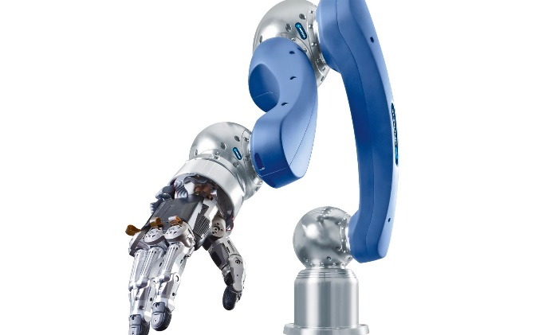

Ir a pagina de inico
Funcionamiento: Esta está diseñada para poder incluso agarrar y sujetar objetos para así realizar tareas. El ser humano, una vez coge algo y se le resbala, tiene unos pocos milisegundos para reaccionar.
Mano Robótico Características:
Está compuesta por cinco servomotores los cuales transmiten el movimiento a través de hilos de nailon a cada uno de los dedos, haciendo la función de tendones y músculos de la mano humana real
PRECIO: 10,000 Pesos

PRECIO: 10,000 Pesos